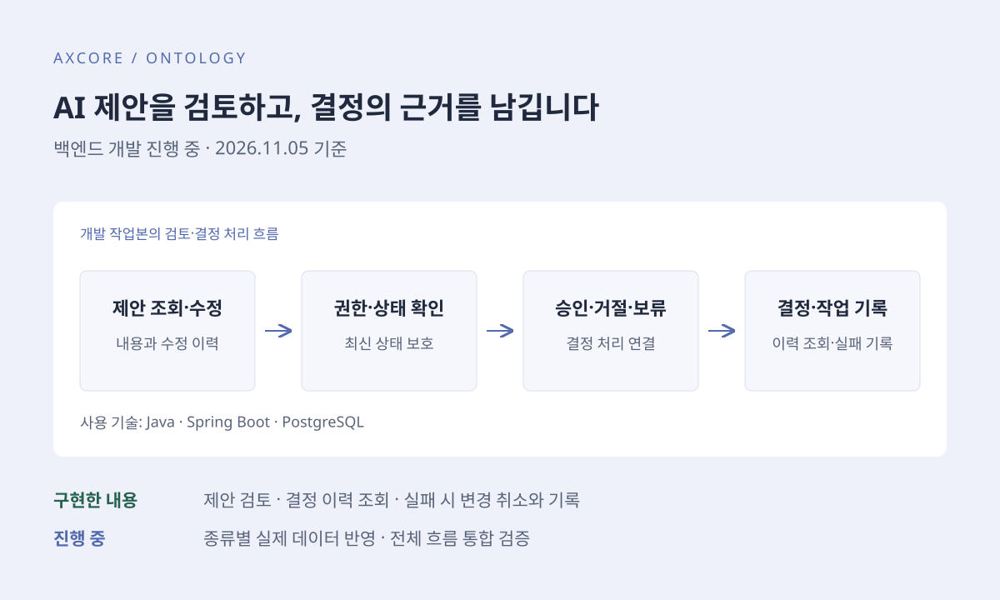
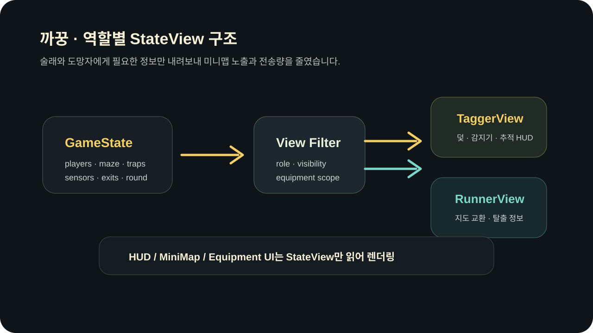
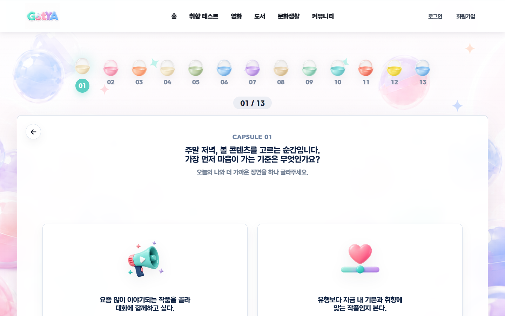

Backend · Data
- Java · Spring Boot
- PostgreSQL · SQL
- Python · Django · DRF
- 외부 API 연동 · 데이터 정리
- REST API · 데이터 저장 구조 설계
정유림 백엔드 개발자
여러 판매처의 객실 요금을 맞추며 데이터가 어긋나는 순간을 경험했습니다.
지금은 화면에 보이는 상태와 실제 데이터가 일치하도록 서비스를 만듭니다.
호텔 판촉실에서 3년 4개월간 객실 요금·판매 가능 객실 수와 프로모션 판매 정보를 운영했습니다. 같은 정보를 여러 판매처에 반복 입력하며 겪은 데이터 불일치를 계기로 Python·SQL과 웹 개발을 배웠습니다.
실무에서 정보를 다시 확인해야 했던 순간들을 기억합니다. 개발할 때에도 요청이 실패하면 무엇이 남는지, 사용자가 다음에 어떤 행동을 할 수 있는지부터 살펴봅니다.
숙박 업무 이해 · 데이터 처리 · 협업
마케팅 판촉실 · 주임
온라인 숙박 예약 사이트와 객실 판매채널 관리 시스템에서 판매처별 객실 요금·판매 가능 객실 수와 프로모션 판매 정보 등록·수정
고객 요청 정리와 프런트·조리·연회 부서의 일정 및 현장 운영 사항 조율
여러 판매처의 반복 입력과 정보 갱신 시점에 따른 데이터 불일치 경험
1학기 925시간 이수 · Python·SQL·웹 개발·AI 및 팀 프로젝트
2026.12 수료 예정 · 2027년 1월 입사 가능
데이터 분석 교육과정 · 삼성청년SW·AI아카데미 입과로 중도 종료
호텔경영학과 졸업
GotYA · 광주 1반 1등
잇담 · 발표회 3등
까꿍 · 발표회 3등
AI 제안을 사람이 검토하고 결정 이력을 남기는 업무 데이터 통합 플랫폼
데이터 반영에 실패했을 때, 승인 기록은 어떤 상태여야 할까?

온톨로지니 · 승인과 결정 이력 처리 흐름도
1 / 1서로 다른 업무 시스템에서 쓰는 데이터의 이름과 연결 기준이 달라, AI가 만든 제안을 검토하고 승인 근거까지 추적할 수 있어야 했습니다.
제안 검토·결정 이력 API를 만들고, 팀원이 담당한 실제 반영 서비스 호출과 승인 기록을 하나의 트랜잭션에 연결했습니다.
객체 유형 제안의 승인·롤백, 실제 반영 결과 조회와 감사 기록을 점검했습니다. 승인 관련 검증 묶음에서 테스트 51개가 통과했습니다.
화면 마크업과 스타일은 HTML·CSS, 개발 설정과 검증은 JavaScript, 운영 스크립트는 Shell, 빌드 설정은 Groovy를 사용했습니다. 데이터베이스에는 SQL과 psql 스크립트가 있습니다.
기업 연계 프로젝트의 처리 원리를 공개용 의사코드로 재구성했습니다.
try {
tx.run(() -> {
applyChange(proposal);
approve(proposal);
recordSuccess(proposal);
});
} catch (RuntimeException error) {
recordFailureSeparately(proposal, error);
throw error;
}var basis = resolveApprovalBasis(proposal);
try {
decideAndRecord(proposal, basis.id());
} catch (RuntimeException error) {
recordFailureSeparately(proposal, basis.id(), error);
throw error;
}for (var expected : expectedLinks) {
if (!actualLinks.contains(expected)) {
reportMissingLink(expected);
}
}여러 담당자가 같은 정보를 다룰 때는 화면에 보이는 내용과 실제 저장 상태가 일치해야 합니다. 권한과 최신 상태를 확인하고, 실패한 변경을 되돌리며, 처리 근거를 남기는 과정을 구현했습니다. 호텔에서 예약과 요금을 반복 확인했던 경험을 바탕으로 사용자가 안심하고 사용할 수 있는 업무 시스템을 고민하고 있습니다.
몸으로 조작하고, 제한된 정보를 나누며 탈출하는 3D 숨바꼭질
지도를 교환한 플레이어는 새로 알게 된 길을 어떻게 알아볼까?
까꿍 · 도망자 시점의 술래 대면 · 실제 게임 인형 데모
술래와 도망자의 목표가 달라, 각 역할에 필요한 정보와 행동 상태를 명확하게 구분해야 했습니다.
역할별 플레이 정보 표시 화면(HUD), 장치 점검, 덫·감지기 설치 피드백과 도망자의 지도 교환 화면을 구현했습니다.
역할별 정보와 조작 피드백 구현술래·도망자에게 필요한 플레이 정보와 장비·지도 교환 화면을 구현했습니다. 팀의 전송 최적화 측정에서는 지도 데이터를 포함한 JSON 상태 전송량을 약 84% 절감했습니다.
웹·게임 서버·공유 모듈은 TypeScript, 화면과 템플릿은 HTML·CSS를 사용했습니다. 빌드와 검증 도구에는 JavaScript, 배포 스크립트에는 Shell을 사용했습니다.
expect(fillsOf(second.calls, MINIMAP_COLORS.floor).length).toBeGreaterThan(
fillsOf(first.calls, MINIMAP_COLORS.floor).length,
);
expect(fillsOf(second.calls, MINIMAP_COLORS.wall).length).toBeGreaterThan(
fillsOf(first.calls, MINIMAP_COLORS.wall).length,
);export const deviceReady = (status: DeviceStatus) =>
status.camera === 'ready' &&
status.vision === 'ready' &&
status.calibration === 'ready' &&
status.audioPlayback === 'ready';await s.transition.replace(prepareRequest);
await s.transition.replace(nextRequest);
expect(await s.transition.replace(prepareRequest)).toMatchObject({
code: 'STALE_GENERATION',
grant: null,
});모든 지도 정보와 플레이어 정보를 그대로 전송하면 역할별로 보이면 안 되는 정보까지 노출될 수 있었습니다. 서버는 원본 GameState를 유지하고, 클라이언트에는 역할별 StateView만 내려보내는 방식으로 구조를 나눴습니다. StateView에는 현재 플레이어가 볼 수 있는 타일, 엔티티, 장비 상태, 미니맵 정보만 포함해 HUD가 이 데이터만 기준으로 렌더링되도록 했습니다.
본인 담당은 역할별 플레이 정보 표시, 장치 점검, 장비 설치 피드백, 지도 교환 화면과 서버 상태의 연결입니다. 서버 투영 구조와 전송량·부하 수치는 팀 구현 및 검증 결과로 구분합니다.
누적 지도는 변경 시에만 보내고, 수신 측은 knowledgeRevision으로 보관 중인 정보와의 일치를 확인합니다. 버전이 맞지 않으면 재동기화합니다. maze-v1·6명·3,600Tick의 코어·투영 측정에서 JSON 전송량은 356 → 56.8 KB/s로 줄었습니다. 영상·음성과 네트워크 부가 비용을 포함한 전체 서비스 대역폭 수치는 아닙니다.
팀 운영 문서에는 게임 단독 60클라이언트·30분 시험 통과가 기록돼 있습니다. 실제 영상·음성을 포함한 단계별 부하 시험은 해당 기록에서 미실행으로 구분돼 있어, 실제 사용자 60명의 미디어 동시 접속 검증과 구별합니다.

이동·장비 설치·구속 등 상태에 따라 할 수 있는 행동이 달라, 색이나 화면 효과만으로는 현재 상황을 파악하기 어려웠습니다.
서버에서 받은 플레이어 상태를 하나의 상태 값과 안내 문구로 바꾸어 표현했습니다.
원본 코드 발췌 · 이해를 돕는 한국어 주석 추가 · 숫자 줄 번호는 원본 기준입니다.
// 상태는 문구와 data-state를 함께 쓰고 색만으로 전달하지 않는다(V4).// 현재 상태와 사용자에게 보여줄 안내를 함께 정합니다.const [state, condition] = // 구속 상태라면 다른 행동보다 먼저 안내합니다. self.restraintUntilTick !== null && round.serverTick < self.restraintUntilTick ? (['restrained', '구속 중 · 풀릴 때까지 기다리세요'] as const) // 탈출 동작과 장비 설치도 각각 구분합니다. : self.challenge ? (['challenge', '탈출 동작 진행 중'] as const) : self.installation ? (['installing', '장비 설치 중'] as const) // 진행 중인 행동에 따라 회전·이동을 알립니다. : self.action?.kind === 'turn' ? (['turning', '회전 중'] as const) : self.action ? (['moving', '이동 중'] as const) // 진행 중인 행동이 없으면 행동 가능으로 안내합니다. : (['ready', '행동 가능'] as const);다섯 단어로 시작해, 함께 이야기를 완성하는 창작 게임
평가를 기다리는 사이에 새 문장을 쓰면 어떤 입력을 남겨야 할까?
잇담 · 도서관 / 공동 책
저장과 AI 평가 응답을 기다리는 동안에도 사용자가 다음 문장을 이어 쓸 수 있어야 했습니다.
일정·이슈를 관리하고 인증부터 문장 작성, 도서관, 서고, 레이드까지 주요 화면과 저장 상태 흐름을 구현했습니다.
저장 중 추가 입력까지 보존평가 완료 시점과 편집 상태를 구분해 새 문장을 보존했습니다. 19+ 화면을 구현하고 저장소에 정리한 28개 테스트와 함께 주요 흐름을 검증했습니다. 팀은 SSAFY 프로젝트 우수상을 받았습니다.
화면 마크업과 스타일에는 HTML·CSS, DB 변경에는 SQL, 린트와 부하 테스트에는 JavaScript, 배포·점검에는 Shell, Gradle 빌드 설정에는 Groovy를 사용했습니다.
// 결과를 기다리는 동안 이미 다음 문장을 쓰기 시작했다면 그 입력을 지우지 않는다.
// 평가한 내용이 그대로 남아 있을 때만 비워 다음 문장 자리를 만든다.
const keptContent = contentRef.current === evaluatedContent ? '' : contentRef.current;expect(await screen.findByRole('alert')).toHaveTextContent(
'원정 상태가 변경됐거나 이미 제출한 문장입니다',
);
// 팝업 없이 제출 버튼이 그대로 남아 바로 다시 시도할 수 있다.
expect(screen.queryByRole('dialog')).not.toBeInTheDocument();
expect(screen.getByRole('button', { name: '이 문장으로 제출하기' })).toBeEnabled();await waitFor(() => {
expect(
screen.queryByRole('navigation', { name: '제출 가능 문장 페이지' }),
).not.toBeInTheDocument();
});
expect(screen.getByText('페이지 범위 테스트 문장 1')).toBeInTheDocument();
expect(screen.getByRole('status', { name: '64 데미지' })).toBeInTheDocument();자동 저장과 수동 저장이 겹치면 같은 초안이 중복 저장되거나 마지막 입력이 누락될 수 있었습니다. 이를 막기 위해 작성 입력값, 저장 진행 여부, 대기 중인 최신 입력, 서버 반영 결과를 분리했습니다. 저장 중 새 입력이 들어오면 요청을 즉시 겹쳐 보내지 않고 pending 값으로 보관한 뒤 현재 요청이 끝난 다음 한 번 더 저장하도록 구성했습니다.
이후 문장 작성 화면은 사용자가 ‘미평가 문장 저장’을 눌러 저장하는 방식으로 바뀌었습니다. 현재 공개 코드의 화면 테스트는 입력 후 1.6초 동안 생성 요청이 0회이고, 저장 버튼을 누르면 1회가 되는지 확인합니다. 저장 중 요청을 관리하는 코드는 초기 구현의 기록입니다.

저장 버튼과 예약된 자동 저장이 겹치면 같은 내용이 중복 저장될 수 있었습니다.
진행 중 요청은 대기 상태로 기록하고, 마지막으로 저장한 내용과 같으면 새 요청을 만들지 않는 분기를 두었습니다.
초기 자동·수동 저장 병행 단계의 코드입니다. 최종 화면이 수동 저장 방식으로 바뀐 내용은 본문과 공개 테스트에서 구분해 설명합니다.
초기 저장 처리 원본 보기 ↗최종 수동 저장 테스트 보기 ↗원본 코드 발췌 · 이해를 돕는 한국어 주석 추가 · 숫자 줄 번호는 원본 기준입니다.
// 내용이 없거나 너무 길거나 저장 중이면 요청하지 않습니다.if (!contentToSave.trim() || content.length > MAX_CONTENT_LENGTH || isSaving) { return null;} // 진행 중인 저장이 있으면(연타·타이머 중복 실행) 버리지 않고 pending으로// 기록한다. 진행 중 저장이 끝나면 최신 내용 기준으로 이어서 저장된다.// 앞선 저장이 끝난 뒤 최신 입력을 저장하도록 표시합니다.if (inFlightSaveRef.current) { setHasPendingSave(true); return null;} // 마지막으로 저장한 내용과 동일하면(수동 저장 직후 예약돼 있던 자동 저장이// 늦게 실행되는 경우) 요청을 만들지 않고 이미 저장된 버전 id를 돌려준다.// 수정 모드는 같은 내용도 새 버전 생성이 목적이라 예외.// 내용이 같으면 새 요청 대신 기존 저장 결과를 사용합니다.if (!isRevisionMode && contentToSave === lastSavedContentRef.current) { return versionId;}나의 취향에서 시작하는 영화·도서·문화생활 추천
AI가 서비스에 없는 콘텐츠를 추천하면 사용자에게 무엇을 보여줄까?

GotYA · 취향 테스트 질문
콘텐츠 유형마다 데이터는 다르지만, 추천·좋아요·찜·후기는 같은 흐름으로 연결해야 했습니다.
공통 콘텐츠 모델과 상세 테이블을 분리하고 외부 데이터 수집·정제·적재와 API를 구현했습니다. GMS를 통한 LLM 추천 연동과 응답 검증·대체 처리를 구현했습니다.
27개 API · 22개 테이블외부 데이터를 하나의 추천 흐름으로 연결하고, LLM 응답을 DB 후보와 대조하도록 구성했습니다. SSAFY 프로젝트 최우수상을 받았습니다.
팀 프런트엔드는 JavaScript와 Vue 컴포넌트로 구성했고, 화면 구성과 스타일에는 HTML과 CSS를 사용했습니다.
if seq not in merged:
merged[seq] = item.copy()
else:
for key, value in item.items():
if value:
merged[seq][key] = valueif content_id in used_ids or content_id not in candidate_by_id:
continue
candidate = candidate_by_id[content_id]
reason = ""
if isinstance(raw, dict):
reason = str(raw.get("reason") or "").strip()[:300]
selected.append((candidate, reason or _default_reason(profile, candidate)))
used_ids.add(content_id)영화, 도서, 문화생활은 필요한 필드가 다르지만 추천, 좋아요, 찜, 후기 구조는 함께 공유해야 했습니다. 공통으로 필요한 제목, 이미지, 유형, 추천 점수, 외부 링크는 ContentItem에 두고, 영화/도서/문화생활별 고유 필드는 상세 테이블로 분리했습니다. 사용자 상호작용은 ContentItem을 기준으로 연결해 콘텐츠 유형이 달라도 같은 추천 흐름을 사용할 수 있게 했습니다.
사용자 취향과 반응을 바탕으로 DB에서 콘텐츠 후보를 선정하고 GMS의 OpenAI 호환 API로 추천 순서를 보정했습니다. AI 도구를 활용해 코드를 작성했으며, LLM의 역할을 제공된 후보 안에서 순위를 정하는 범위로 제한했습니다.
취향·반응 → DB 후보 선정 → LLM 순위 보정 → ID·중복 검증 → 부족분 보완 → 결과 제공
응답의 ID가 후보 목록에 있는지 대조하고, 중복 또는 유효하지 않은 ID를 제외한 뒤 부족한 결과는 DB 후보로 보완합니다. 호출 실패나 응답 해석 오류는 DB 기반 추천으로 대체하며, 같은 조건의 요청은 캐시를 재사용하도록 구성했습니다.
유형별 테이블만 사용하면 찜·후기에서 콘텐츠 유형마다 참조 경로를 나눠야 하고, 모든 필드를 한 테이블에 모으면 유형별로 사용하지 않는 필드가 늘어납니다. 공통 식별자는 ContentItem으로 통일하고 상세 정보를 분리해 공통 상호작용을 재사용했습니다. 대신 상세 조회에는 연결 조회가 필요하고, 콘텐츠 유형과 상세 데이터의 일치도 함께 관리해야 합니다.

AI가 돌려준 추천에 실제 후보에 없는 ID나 같은 콘텐츠가 섞일 수 있었습니다.
응답 ID를 DB 후보와 대조하고 중복을 제외했습니다. 부족한 추천은 준비한 후보에서 채우는 흐름으로 연결했습니다.
원본 코드 발췌 · 이해를 돕는 한국어 주석 추가 · 숫자 줄 번호는 원본 기준입니다.
# AI가 반환한 항목을 하나씩 확인합니다.for raw in raw_rows: raw_id = raw.get("content_item_id") if isinstance(raw, dict) else raw # ID를 숫자로 바꿀 수 없으면 제외합니다. try: content_id = int(raw_id) except (TypeError, ValueError): continue # 중복이거나 DB 후보에 없는 ID는 사용하지 않습니다. if content_id in used_ids or content_id not in candidate_by_id: continue candidate = candidate_by_id[content_id] reason = "" # 추천 이유가 비어 있으면 기본 설명으로 채웁니다. if isinstance(raw, dict): reason = str(raw.get("reason") or "").strip()[:300] selected.append((candidate, reason or _default_reason(profile, candidate))) used_ids.add(content_id) if len(selected) >= per_type: break # 추천 개수가 부족하면 준비한 DB 후보로 보충합니다.for candidate in candidates[content_type]: content_id = candidate["content_item_id"] if len(selected) >= per_type: break # 이미 선택한 항목은 다시 넣지 않습니다. if content_id in used_ids: continue selected.append((candidate, _default_reason(profile, candidate))) used_ids.add(content_id)흩어진 주거 위험 지표를 모아 서울 동별 시범 분석 결과를 지도로 보여준 프로젝트
지역과 단위가 다른 주거 위험 지표를 어떻게 한 지도에서 비교할까?

HomeKeeper · 로컬 재실행 시범 분석 지도 전체 화면
앞의 두 화면은 로컬에서 재실행한 시범 분석 지도에서 캡처했습니다. 원래 운영 서비스 화면을 재현한 것은 아닙니다. 지도 배경 © OpenStreetMap contributors.
주거 위험을 살펴볼 자료가 여러 곳에 흩어져 있고, 행정구역 단위도 달라 지역별로 함께 비교하기 어려웠습니다.
외부 데이터를 수집하고 지역 단위를 맞춘 뒤, 값의 규모가 다른 지표를 정제·정규화해 분석에 사용할 수 있도록 준비했습니다.
서울 동 단위 시범 분석 · 지도 시각화모델을 비교하고 위험도 점수를 지도와 대시보드에서 살펴볼 수 있게 했습니다.
전세가율, 신축빌라 비율, 근저당·경매 관련 자료 등 서로 다른 출처의 지표를 모았습니다. 구 단위로 제공되는 자료를 동 단위 결과와 비교할 때는 배분 방식에 따른 차이도 확인했습니다. 수집한 값을 정리하고 정규화한 뒤 여러 예측 모델의 결과를 비교해 지도에 표시했습니다.

이 지도는 제한된 기간의 자료와 일부 지역 단위 추정값을 사용한 시범 분석입니다. 피해 신고의 누락·지연이나 지표별 집계 기준 차이도 남아 있어, 특정 주택이나 계약의 안전성을 판정하는 용도로 사용할 수 없습니다.
자료마다 지역 이름과 지표의 값 범위가 달라 한 지도에서 비교하기 어려웠습니다.
지역 기준을 확인하고, 크기가 다른 지표를 비교 가능한 범위로 바꾸는 분석 절차를 설명합니다.
원본 분석 노트북 발췌가 아닌 설명용 Python 예시입니다. 원래 모델·점수를 재현하는 코드가 아니며, 실제 수행 범위와 분석의 한계는 본문에 적었습니다.
분석 절차와 흐름도 보기 ↗설명용 예시(원본 소스 아님) · 한국어 주석으로 처리 순서를 설명합니다.
# 분석 흐름을 설명하는 예시입니다.# 원본 데이터는 보존하고 복사본을 정리합니다.metrics = source_data.copy()# 지역 이름 앞뒤의 불필요한 공백을 지웁니다.metrics["region"] = metrics["region"].str.strip()# 같은 지역이 여러 행이면 집계 기준부터 확인합니다.if metrics["region"].duplicated().any(): raise ValueError("지역별 집계 기준을 먼저 확인합니다.") # 단위가 다른 지표를 0~1 범위로 맞춥니다.for column in indicator_columns: values = metrics[column] # 값의 범위가 0이면 나누지 않도록 예외 처리합니다. span = values.max() - values.min() metrics[column] = ( (values - values.min()) / span if span > 0 else 0.0 ) # 지역 이름을 기준으로 지도 경계와 지표를 연결합니다.map_rows = boundaries.merge( metrics, on="region", how="left", # 지역 하나에 지표 한 행만 연결되는지 확인합니다. validate="one_to_one",)